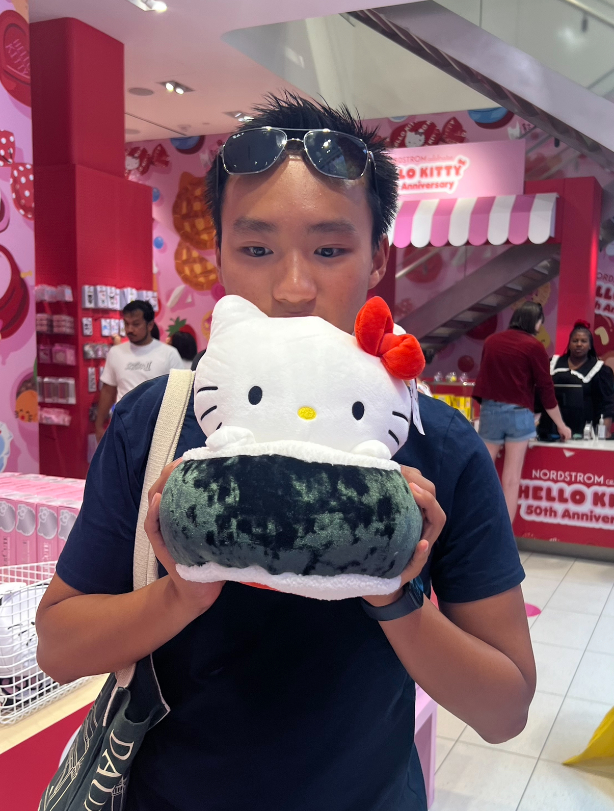

Hey! Its jayden! I just want to thankyou first of all for coming here, I can't believe you actually care enough about my bs to be reading this lollll welp I hope you enjoy! Explore everything!
Ever since I discovered this game, I was obsessed (as you can tell). In reality I'm not that obsessed, I just wanted a topic to expand my web design and development skills: so enter this reality: before you I present to the world my gaming blog. Hopefully, in the future this will expand to other games I play, but for right now, DTI is in. I can't wait to share with you my journey and all the things I do! Starting around april, I was hooked. Since then, I have created many fun outfits and really expressed my creativity; this game truly resonates in my heart as a safe place for expression and limitless possibility.
So far, I have grown into my confidence as a gamer and also as a person. Over the months, I care less about what people think and more on how I can reach the limits of my mind; game wise and irl. This game is my oasis in the middle of chaos. I play to destress, get competitve, or just socialize. The world of fashion has finally opened its doors to me and has shown 1. how much it brings people together and 2. how awesome game development is. I wanna thank gigi for all the editions to the game since I started, she really has been carrying the world on her back. Thankyou for bringing so much joy into my daily life, and a new accrued passion. Thank you DTI.